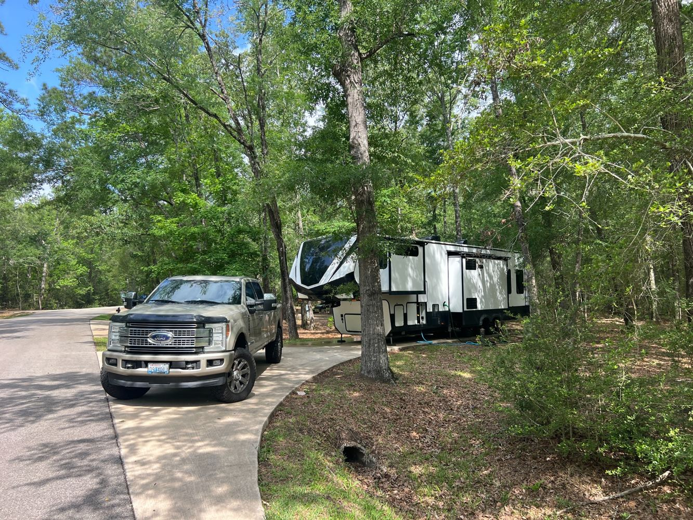
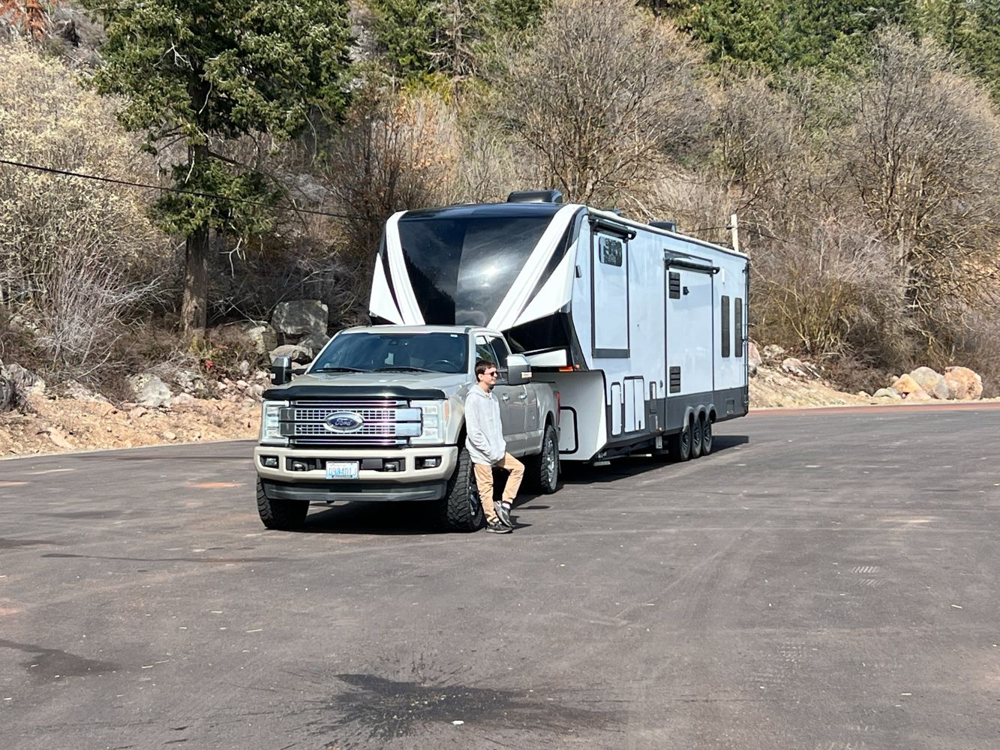

Mopeka Propane Tank Sensors
Wondering how much propane is left? We use sensors to monitor our RV tanks instead of guessing. Read about the setup, readings, and limitations before deciding whether they fit your RV.
GOSEEDA · FULL-TIME RV FAMILY
When your RV is your home, equipment needs to earn its place. Here's the gear we use, the problems it solves for us, and what we've learned on the road. Start with our videos and articles—not just a shopping link.
Wondering how much propane is left? We use sensors to monitor our RV tanks instead of guessing. Read about the setup, readings, and limitations before deciding whether they fit your RV.

Reliable internet matters when you're living full-time on the road. We've used Starlink for months and share our setup, typical speeds, tree-obstruction challenges, and what we'd choose again.
We use this anodized aluminum tripod for our Starlink setup. It folds down smoothly for storage, which is especially handy when we pack up the RV. Our Starlink fits using the pole adapter that came with our dish, so we did not need a separate adapter. Ground stakes are included, although we have not needed to use them. We cannot speak to how it performs in strong winds.

Some repairs can be handled with the right tools and a little patience. See the equipment and materials we've used for real repairs, including our fifth-wheel fender skirt project.
We'd rather explain why we use something—and where it falls short—than recommend gear we haven't tested. We'll add more specific items and verified links as we document them on Goseeda.
Have a question about our setup? Ask us, or watch the Going Full-Time series.